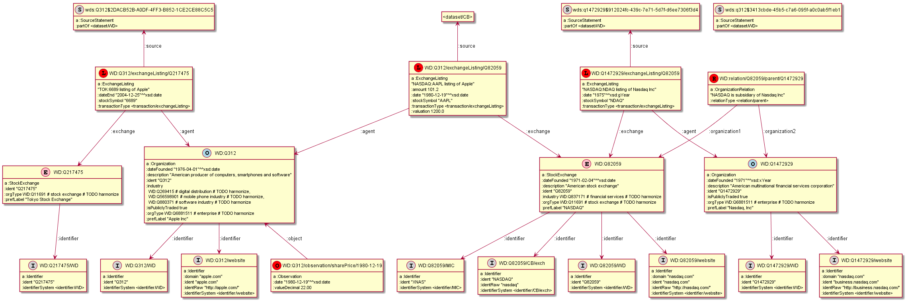
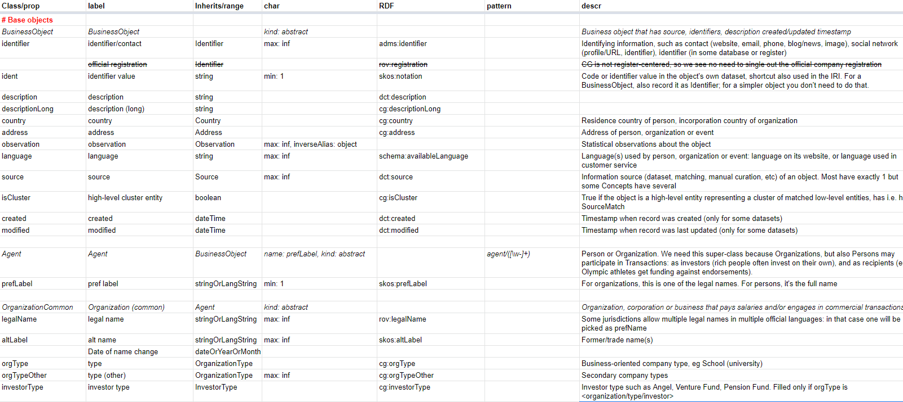
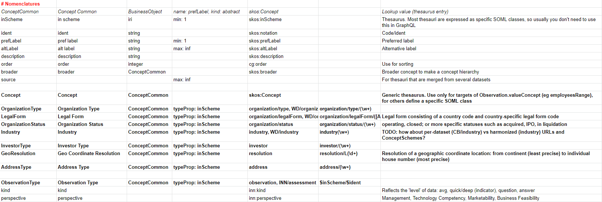

Semantic Objects Modeling Language
Table of Contents
1. Intro
The Semantic Objects Modeling Language (SOML) is a simple YAML-based language for describing business objects (business entities, domain objects) that are handled using semantic technologies and GraphQL. SOML is the language of the Ontotext Platform.
The Ontotext Platform helps create knowledge graphs in an easier way, both using and enabling text analytics to interlink and enrich knowledge graphs, and enabling better search, exploration, classification, and recommendation across diverse information spaces.
Version 3.0 of the Platform was released at the end of 2019 and is under active develoment and evolution.
- It is documented at http://platform.ontotext.com/, including:
- The blog post A New Hope: The Rise of the Knowledge Graph (Navigating through the Star Wars universe with knowledge graphs, SPARQL and GraphQL), 6 December 2019 introduces the platform, compares RDF and GraphQL representations of a domain (Star Wars), and shows interactive GraphQL queries.
This blog goes in-depth on SOML:
motivates the use of SOML,
describes some tricky points of SOML usage and GraphQL deficiencies,
and introduces some SOML tooling for
generating SOML (tsv2soml) and mapping RDF data (soml-map)
1.1. Why SOML?
We often are asked why we had to introduce yet another object modeling language? Why didn't we use existing semantic web mechanisms such as ontologies (RDFS or OWL) or shapes (SHACL or SHEX), or schema mechanisms such as GraphQL schema, JSON schema and the like? The answer is multi-fold:
- Semantic models are more than ontologies
- Every sizable semantic project (and many LOD datasets) use a number of ontologies together. While ontologies describe the vocabulary of classes and properties to use, extra mechanisms are required to describe how these elements are put together, and what are the data expectations about different kinds of nodes in the graph. One could do some of that with ontologies, e.g. use OWL property cardinalities, complex OWL classes to define polymorphic domains and ranges, and XSD datatype constructions to describe literal patterns. However, the inferential rather than validation semantics of RDFS and OWL and their inherent complexity have led people to use application profiles and RDF shapes instead.
- Lack of standardization
- While there are several implementations of GraphQL querying over RDF, each of them does it in a different way and there is no standardization. The TopQuadrant GraphQL to SHACL mapping comes close to using SHACL for generating GraphQL schemas, but still uses custom extensions. Definitive mappings between SHACL and SHEX are not available. The Bridging GraphQL and RDF W3C Community Group has been launched (Jan 2020) with the mission to close this gap, and hopefully define standard mappings/crosswalks between SHACL, SHEX and GraphQL schemas and validation mechanisms. We plan to participate actively in this group.
- Freedom to innovate
- Our ambition is for the Ontotext platform to cover a wide variety of enterprise features. To be able to develop them at our own pace, we need a language where we can add such innovations. Examples include data validation based on RDF shapes (generated from SOML); Role-Based Access Control (RBAC); faceting, autocompletion and full-text search; aggregation; distribution of data to various stores through GraphDB Connectors and/or GraphQL Federation.
- Technology independence
- Flowing from the previous reason, we'd like SOML to be technology-independent to some degree. While we don't aim for a theoretical develpment that lives in a technological vacuum, we need to be able to generate a number of technical artefacts from the same business-level model.
1.2. Similar Schema Languages
A number of schema languages have appeared recently that are based on YAML, express business-level object models that are somewhat independent of technological choices, and can render the models to a variety of schema technologies:
- BioLink modeling language. Models are authored in YAML. A variety of artefacts can be generated, including SHEX, JSON-Schema, OWL, Python dataclasses, ElasticSearch type definitions, UML diagrams, Markdown pages for deployment in a GitHub pages site, etc.
- HL7 FHIR, which is a business-level language for expressing Health Care models and has renditions in UML, XML, JSON, Turtle, SHEX.
- a.ml: Anything Modeling Language (see documentation, vocabularies, dialects), which targets mapping of YAML schemas to ontologies and SHACL shapes, and YAML documents to RDF graphs.
- Cloud Information Model (CIM), which targets AML Vocabulary (conceptual model), AML Dialect (data shapes), RDFS (entities and relationships), SHACL (data shapes and constraints), SQL DDL (relational database schema), R2RML (mapping from relational schema to RDF), RAML (REST API data types), JSON Schema (data shapes)
- The Uber Graph Schema Language, a YAML language that is used to generate various artefacts (ProtoBuf, Avro, RDFS ontology, etc) and to integrate 200 thousand datasets at Uber. While not publically available, it's described in presentations by Joshua Shinavier including:
1.3. What is SOML
At present SOML is very simple, but will evolve to include more features. The overall structure of a SOML file (schema) is shown below.
# comment id: /soml/<identifier> label: some name created: yyyy-mm-dd updated: yyyy-mm-dd creator: name and/or URL versionInfo: version # comment specialPrefixes: base_iri: <base> vocab_iri: <vocab> vocab_prefix: <voc> ontology_iri: <ontology> shape_iri: <shape> prefixes: <pfx>: <namespace> # datatypes types: <type>: {rdf: <xsd-type>, graphql: <GQL-type>, descr: "...", graphqlExtension: <boolean>} <union-type>: {union: [<type>...], graphql: <GQL-type>, descr: "..."} # common property definitions properties: <prop>: {label: "...", descr: "...", range: <datatype|Obj>, rangeCheck: <boolean>, typeCast: <boolean>, kind: (object|literal|mixed), min: <default 0>, max: <default 1>, inverseAlias: <prop>, inverse: <prop>, rdfProp: pfx:prop, symmetric: <boolean>, regex: '<regex>', prefix: "<string>"} # object class definitions objects: <Obj>: {label: "...", descr: "...", regex: '<regex>', prefix: "<string>", typeProp: <prop>, type: [<iri>...], name: <prop>, inherits: <Obj>, kind: (abstract|supertype)} props: <prop>: ...
From this schema the Platform generates a complex GraphQL schema including a fairly complete querying language that allows you to find any kind of object, filter, order, navigate through the KG, and do pagination (limit, offset).
You can find details in the SOML documentation, while below we describe some tricky points of SOML usage and GraphQL deficiencies, and some tooling.
2. Complex Schema (Company Graph)
To introduce the proper context for this blog (working with complex SOML schemas), we'll describe the Ontotext Company Graph (ONTO CG) ontology and model. It's a medium-high complexity data model that reuses 14 ontologies and adds classes and props of its own. Of its 24 classes and 150 props, about half are reused and half are created especially for CG. It's fairly typical data model for the kind of projects that Ontotext deals with.
Creating the ONTO CG knowledge graph is part of the Intelligent Matching and Linking of Company Data (CIMA) research project. We are integrating data from open and a few proprietary datasets. The emphasis of the project is on financial transactions, industrial classification, company size/importance observations (e.g. annual sales, number of employees), etc.
The following table shows the count of classes and properties defined by the ONTO-CG ontology, as well as those reused from other ontologies.
| Prefix | Ontology | Classes | Props |
|---|---|---|---|
| cg | Ontotext Company Graph | 12 | 70 |
| adms | Asset Description Metadata Schema | 1 | 1 |
| dcat | Data Catalog Vocabulary | 3 | |
| dct | Dublin Core Terms | 8 | |
| ebg | euBusinessGraph | 1 | 12 |
| gn | GeoNames | 1 | 9 |
| locn | W3C Location Ontology | 1 | 8 |
| org | W3C Core Organization Ontology | 1 | 5 |
| qb | W3C Cube Ontology | 1 | 1 |
| rov | W3C Registered Organization | 1 | 4 |
| schema | Schema.org | 3 | 12 |
| skos | Simple Knowledge Organization System | 1 | 6 |
| time | W3C Time Ontology | 2 | |
| void | Vocabulary of Interlinked Datasets | 1 | 7 |
| wgs84 | World Geodetic Survey | 2 | |
| 24 | 150 |
ONTO CG builds upon the results of the euBusinessGraph project. The euBusinessGraph semantic model and dataset covers the following (we have submitted a description of it to a prominent journal on semantic technologies):
- Basic firmography (legal names, preferred name)
- Basic person info
- Geography, address, hieararchical administrative divisions
- Company legal type and status
- Industry classification (based on NACE)
- Identifiers from Official registers and others
- Company officers and directors (positions, using
org:Membership) - Datasets, providers, dataset descriptions
ONTO-CG steps on the euBusinessGraph model and adds the following:
IdentifierSystems: We extend the euBusinessGraph idea of generalized identifiers to record any kind of potentially useful identification info in a generic way: phone, email, website, blog, logo/image; profile links and identifiers in various external systems such as: Wikidata, DBpedia, Facebook, LinkedIn, Twitter, Youtube, Reddit, Github, CrunchBase, OpenCorporates, Thomson Reuters permid (TR), ISO 10383 Market Identifier Code (MIC); research-oriented identifiers such as CrossRef funder, Microsoft Academic Graph, Global Research Identifier Database (GRID), Research Organization Registry (ROR), Virtual International Authority File (VIAF).cg:StockExchange: a Stock exchange where companies can offer shares or other securities. We record MIC and TR exchange codes as identifiers.cg:Eventandcg:EventAppearance: Conference, workshop, meetup, etc where the work of a certain person or company may be highlighted.gn:Feature: While the euBusinessGraph geographic hierarchy is based on EuroStat NUTS and LAU, ONTO-CG uses Geonames locations to implement geographic matching, auto-completion and faceting. We are particularly interested in the 3 levels Country, Region, City that we have defined as particular lists of gn:featureCodes (e.g. Country corresponds togn:A.PCLI, gn:A.PCLD, gn:A.PCLIX, gn:A.PCLS, gn:A.PCL, gn:A.TERR, gn:A.PCLF).cg:AcademicQualification: Academic degree (completed or not) of a person at a scholl in an academic major.qb:Observation: Statistical or other observation about an object (typically company), such as annual sales, number of employees, etc. May be for a particular year, point in time, or without date (current).cg:Transaction: Financial transaction that gives money to a company in return for shares or other consideration.cg:OrganizationRelation: Relation between two agents. For asymmetric relations we use two fields "agentMinor" (e.g. subsidiary, owned, supplier) and "agentMajor" (e.g. parent, owner, customer); for symmetric relations we use the field "agent" twice. Usually these are Organizations, but "owner" could involve Persons.- Sourcing (provenance) for each node:
void:Dataset: Dataset as source of entitiesvoid:Linkset: Linkset as source of identifiers (links)cg:SourceMatch: Cluster of matched lower-level entities as the source of a higher-level entity.
In addition to the above new classes, ONTO-CG adds:
- A 2-level data model where data from individual datasets sits at a lower (KG-building) level, and after matching and data fusion is promoted at a higher (data consumption) level.
- Various extra fields, e.g.
cg:geoPrecision"Precision of geo coordinates in meters (e.g. street address or building -> 30.8)" to complementebg:geoResolution"Resolution of geo coordinates as a categorial value (e.g. building -><resolution/L9>)" - Various flags, e.g. for Organization (
cg:isResearch), Position (cg:isCurrent, cg:isPrimary), AcademicQualification (cg:isCompleted), ExchangeListing, OrganizationRelation (cg:isCurrent) - Business nomenclatures (
skos:ConceptScheme):Organization Type, Legal Form, Organization Status, Industry, Investor Type, Geo Coordinate Resolution, Address Type, Observation Type, Gender, Event Type, Event Appearance Type, Position Type, Transaction Type, Relation Type
The full CG schema is included: CG.yaml. Below we show a couple of typical examples.
2.1. Example Class:
ExchangeListing: label: "Exchange Listing" inherits: Transaction type: [cg:ExchangeListing] descr: "Public offering (IPO, SPO etc) wheres the company receives money from the wide public, and as a result is listed for trading on an exchange" props: exchange: label: "exchange" range: StockExchange min: 1 rdfProp: cg:exchange descr: "Stock exchange" stockSymbol: label: "stock symbol" range: string rdfProp: cg:stockSymbol descr: "Stock symbol (ticker). TODO: this should also be represented as an Identifier?" valuation: label: "valuation (MUSD)" range: decimal rdfProp: cg:valuation descr: "Company valuation at IPO in MUSD" valuationLocal: label: "valuation (M local currency)" range: decimal rdfProp: cg:valuationLocal descr: "Company valuation at IPO in millions of local currency" valuationCurrency: label: "valuation currency" range: string rdfProp: cg:valuationCurrency descr: "Currency code of the valuation" dateEnd: descr: "Date delisted or left this exchange" isCurrent: rdfProp: cg:isCurrent descr: "Whether the listing is still effective"
If you look closely, you may wonder where the range and RDF mapping of dateEnd is defined.
It's in the list of reusable properties:
properties: # reused props dateEnd: {label: "dateCompleted", range: dateOrYearOrMonth, rdfProp: cg:dateEnd}
A more appropriate descr is given at the object level, overriding the generic description.
2.2. Example Inverse Alias
A Position is an associative node between Person and Organization that adds more data (not shown):
Position: label: "Position" inherits: BusinessObject type: [org:Membership] descr: "Position of a person in an organization, former or current" props: person: {label: "person", range: PersonCommon, min: 1, rdfProp: org:member} organization: {label: "organization", range: OrganizationCommon, min: 1, rdfProp: org:organization}
To allow navigation in any direction (not just from Position out, but also in), we add inverse aliases:
PersonCommon: props: position: {label: "position", range: Position, inverseAlias: person} OrganizationCommon: props: position: {label: "position", range: Position, inverseAlias: organization}
2.3. Example Diagram: Exchange Listing SOML
For example, the figure below shows the stock exchange listing (IPO) of Apple on the Tokyo exchange and NASDAQ, and the listing of Nasdaq Inc (the company) on NASDAQ (the stock exchange).
- The data is integrated from Wikidata.
- This figure is generated from RDF Turtle using rdfpuml (see V.Alexiev, RDF by Example: rdfpuml for True RDF Diagrams, rdf2rml for R2RML Generation, Semantic Web in Libraries (SWIB), Nov 2016.
- This version of the diagram uses original SOML (GraphQL) property and class names, i.e. all of them share the same namespace (expressed using the empty) prefix.
- It can be considered as a "logical" data model of how data should be queried with GraphQL
./eg/model-exchange-listing.ttl

2.4. Example Diagram: Exchange Listing RDF
This version of the diagram uses soml-map to map SOML names to RDF names in specific namespaces.
- So this can be considered the "physical" data model of data as it's stored in the semantic database
./eg/model-exchange-listing-mapped.ttl

3. SOML Tooling
3.1. owl2soml
This tool (written in Perl) generates SOML schemas from ontologies (that use RDFS, OWL and/or schema.org constructs). It handles numerous features and has been integrated in the Ontotext Platform (reimplemented in Java). See its own README.
3.2. tsv2soml
Editing large schemas is often easier to do in a table, even when the schema language is simple. (Also, this enables domain experts to participate in schema authoring, even if only editing the descriptions.)
The CG model was not written by hand, it was generated from a TSV (google sheet).
The sheet has 300 rows, and the generated SOML is 1176 lines. Here's the beginning of the sheet:

Here is the end of the sheet, which exposes various thesauri (ConceptSchemes)
as distinct business classes

To generate a SOML schema from the google sheet CG-data-model, call it like this:
curl -s "https://docs.google.com/spreadsheets/d/1_-bn9Y-9rtysnvKiVus6BkFKXqHhiV4vCjYeiRmb6XU/export?format=tsv" | perl tsv2soml.pl | cat CG-preamble.yaml - > CG.yaml
Here CG-preamble.yaml is some fixed SOML metadata (a header).
Options:
-p: don't emitpattern(this feature restricts URLs to a certain pattern)-l: downgrade Literals:stringOrLangString, langString->string,dateOrYearOrMonth->date. This can be used to simplify the schema not to uselangStringand union datatypes
3.3. soml-map
tsv2soml writes out a file soml-map.tsv (see exmaple soml-map.tsv) with columns "class, prop (optional), rdf"
- For props without
RDFvalue, it uses the RDF name from the shared first occurrence of the same prop name
It can be used to map from SOML names to RDF names (class/prop URLs) in specific namespaces. Eg compare Example Diagram: Exchange Listing SOML vs Example Diagram: Exchange Listing RDF.
It can be used to map examples (models) or conversion scripts (TARQL, or SPARQL Update for OpenRefine) from a "logical" representation using uniform GraphQL names to a "physical" representaiton using specific RDF names.
Usage:
perl soml-map.pl < file.(tarql|ru|ttl) > file-mapped.(tarql|ru|ttl)
3.4. soml2puml
Generate nice PlantUML diagrams from SOML models. See its own README.
4. Tricky Points and Deficiencies
4.1. GraphQL Type vs rdf:type
4.2. Single vs Multiple-Value Props
4.3. Inverse Aliases
4.4. Literals
(langString, union datatypes)